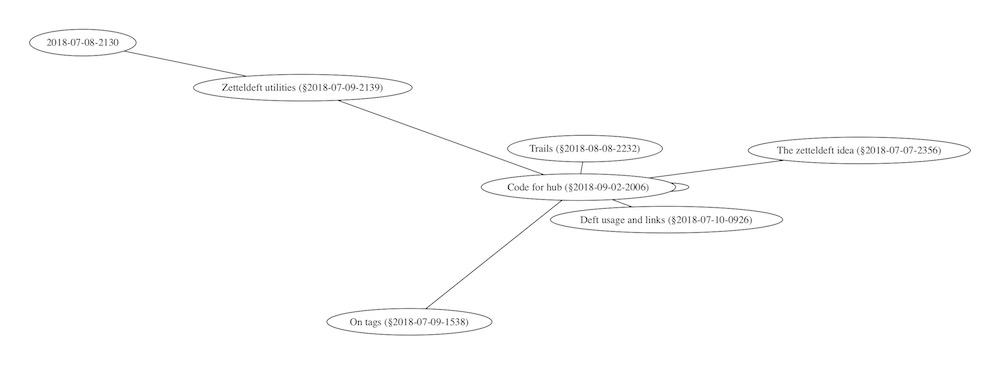

<<<<<<< HEAD
=======
>>>>>>> 1bcaa13c94bad203e22374cd692a8b1a353241aa
Zetteldeft
Zetteldeft
This document contains all the source code to a set of functions for emacs which aim to extend the deft package and turn it into a (very very) basic Zettelkasten note-taking system.
Check out the github repository to get the source.
Read on for an introduction and some documentation.
Latest additions:
<<<<<<< HEAD
18 Dec: insert not yet included links with zd-insert-list-links-new.
15 Nov: open link in other window with zd-avy-file-search-ace-window.
13 Nov: functions to create graphviz added.
4 Nov: zd-all-tags and zd-tag-buffer find all tags
21 Oct: zetteldeft is now a package.
10 Oct: Insert contents of files with given search term with zd-org-search-insert.
24 Sep: Count the total number of words in your zetteldeft with zd-count-words.
18 July: Include a list of links with zd-insert-list-links, or a list of files with zd-org-search-include.
<<<<<<< HEAD
1 What?
1.1 A Zettelkasten system for emacs based on deft
=======
1 What?
1.1 A Zettelkasten system for emacs based on deft
>>>>>>> 1bcaa13c94bad203e22374cd692a8b1a353241aa
This is my feeble attempt at recreating a Zettelkasten environment by extending the excellent deft package in emacs.1
I call it zetteldeft.
It is inspired by the The Archive app. For this and more on the Zettelkasten way of taking notes, see zettelkasten.de. They have a forum for discussion on both software and the specifics of the Zettelkasten philosophy.
The code that follows is created and maintained for my personal use, shared here in hope that it can benefit others as well.
I’d be happy to learn how you use it and expand upon it.
It is very much WIP and I’m fairly new to elisp, so it might contain some stupid code.
Anyway, here we go.
<<<<<<< HEAD
1.2 How to use this source
=======
1.2 How to use this source
>>>>>>> 1bcaa13c94bad203e22374cd692a8b1a353241aa
This package requires:
deft, obviously
avy to jump & search
From the github repository, either
download the org-file and org-tangle it yourself. It should contain everything.
or download the zetteldeft.el file.
Whichever way you go, load up the package by adding the package to your load path and requiring:
and you’re good to go!
Well, not quite. First you must read on about the basics of zetteldeft.
<<<<<<< HEAD
1.3 Basic concepts
=======
1.3 Basic concepts
>>>>>>> 1bcaa13c94bad203e22374cd692a8b1a353241aa
Notes reside in the deft-directory.
Notes are written in org-mode syntax (although most functions should work in markdown as well).
The filename of a note starts with a unique id based on the time and the date, for example: 2018-07-09-2115 This is a note.org.
This unique id can be used to link notes together.
A link is indicated by a § character, followed by the id.
For example: §2018-07-09-2115 should link to the file above.
A link can appear anywhere in the text.
When searching deft with the id as a filter, you’ll find both the original note (with the id in its name) and all the notes that link to this note (with the id in its body). Do so with zd-search-current-id and zd-avy-link-search respectively
Notes can contain tags in plain text: words prepended with a #.
This is a tag: #tag.
Tags make it easy to retrieve notes. They can appear anywhere in the note, but I’d suggest putting them somewhere at the top.
<<<<<<< HEAD
1.4 Basic actions
=======
1.4 Basic actions
>>>>>>> 1bcaa13c94bad203e22374cd692a8b1a353241aa
Create a note with zd-new-file and provide a name.
Insert links to other notes: use zd-find-file-id-insert and select a file from the list.
With zd-find-file-full-title-insert, you guessed it, the note’s title is included as well.
To branch out from a current note and link to a new one, use zd-new-file-and-link.
To search for a tag or anything else under cursor, use zd-search-at-point.
Combined with the power of avy to jump to any character on screen, use these to jump and search in one go: zd-avy-link-search and zd-avy-tag-search.
To open the note behind a link, use zd-avy-file-search.
<<<<<<< HEAD
1.5 An overview
=======
1.5 An overview
>>>>>>> 1bcaa13c94bad203e22374cd692a8b1a353241aa
While there are more functions, these should be enough to get you started.
Default keybindings are suggested at the bottom of this document.
Here is an overview.
Function
Use
Keybinding
zd-new-file
Create new note and open
SPC d n
zd-new-file-and-link
Create new note and insert § id
SPC d N
zd-find-file-id-insert
Pick a note and insert its § id
SPC d i
zd-search-at-point
Search for thing at point
SPC d s
zd-avy-file-search
Select § id and open linked file
SPC d f
zd-avy-link-search
Select § id and search for it
SPC d l
zd-avy-tag-search
Select # tag and search for it
SPC d t
zd-search-current-id
Search for id of current file
SPC d c
More details documented below.
<<<<<<< HEAD
2 The zetteldeft package
2.1 Package preparation
=======
2 The zetteldeft package
2.1 Package preparation
>>>>>>> 1bcaa13c94bad203e22374cd692a8b1a353241aa
The required preamble and some other initial settings.
To know how this package works, please skip right past this to the next section.
<<<<<<< HEAD
2.1.1 Preamble
=======
2.1.1 Preamble
>>>>>>> 1bcaa13c94bad203e22374cd692a8b1a353241aa
Some declaration.
;;; zetteldeft.el --- a simple package -*- lexical-binding: t; -*-;; Copyright (C) 2018 EFLS;; Author: EFLS <email>;; Keywords: deft zettelkasten zetteldeft;; Version: 0.0.1;; This program is free software; you can redistribute it and/or modify;; it under the terms of the GNU General Public License as published by;; the Free Software Foundation, either version 3 of the License, or;; (at your option) any later version.;; This program is distributed in the hope that it will be useful,;; but WITHOUT ANY WARRANTY; without even the implied warranty of;; MERCHANTABILITY or FITNESS FOR A PARTICULAR PURPOSE. See the;; GNU General Public License for more details.;; You should have received a copy of the GNU General Public License;; along with this program. If not, see <http://www.gnu.org/licenses/>.;;; Commentary:;; Zetteldeft: turn deft into a zettelkasten writing system to create linked notes.;;; Code:
<<<<<<< HEAD
2.1.2 Requirements
=======
2.1.2 Requirements
>>>>>>> 1bcaa13c94bad203e22374cd692a8b1a353241aa
deft is required, obviously, and avy is needed for some utility functions.
(require 'deft)
(unless (package-installed-p 'avy)
(user-error 'zetteldeft "Avy not installed, required for zd-avy-* functions."))
(require 'avy)
<<<<<<< HEAD
2.1.3 Customization
=======
2.1.3 Customization
>>>>>>> 1bcaa13c94bad203e22374cd692a8b1a353241aa
For easy but minor customization options.
(defgroupzetteldeft nil
"A zettelkasten on top of deft.")
Based on snippet suggested by saf-dmitry on deft’s Github.
(defunzd-get-thing-at-point ()
"Return the thing at point, which can be a link, tag or word."
(require 'thingatpt)
(let* ((link-re "\\[\\[\\([^]]+\\)\\]\\]")
(htag-re "\\([§#@][[:alnum:]_-]+\\)"))
(cond
((thing-at-point-looking-at link-re)
(match-string-no-properties 1))
((thing-at-point-looking-at htag-re)
(match-string-no-properties 1))
(t (thing-at-point 'word t)))))
<<<<<<< HEAD
2.2.1.2zd-search-at-point thing at point
=======
2.2.1.2zd-search-at-point thing at point
>>>>>>> 1bcaa13c94bad203e22374cd692a8b1a353241aa
Search the thing at point.
Note that calling zd-search-at-point on a § link includes § in the filter string.
Based on snippet suggested by saf-dmitry on deft’s Github.
(defunzd-search-at-point ()
"Search deft with thing-at-point as filter.Thing can be a double-bracketed link, a hashtag, or a word."
(interactive)
(let ((string (zd-get-thing-at-point)))
(if string
(zd-search-global string t)
(user-error"No search term at point"))))
<<<<<<< HEAD
2.2.1.3zd-search-global for string
=======
2.2.1.3zd-search-global for string
>>>>>>> 1bcaa13c94bad203e22374cd692a8b1a353241aa
Search with deft for given string.
If there is only one result, that file is opened, unless additional argument is true.
Based on snippet suggested by saf-dmitry on deft’s Github.
(defunzd-search-global (str &optional dntOpn)
"Search deft with STR as filter.If there is only one result, open that file (unless DNTOPN is true).";; Sanitize the filter string
(setq str (replace-regexp-in-string "[[:space:]\n]+"" " str))
;; Call deft search on the filter string
(let ((deft-incremental-search t))
(deft)
(deft-filter str t))
;; If there is a single match, open the file
(unless dntOpn
(when (eq (length deft-current-files) 1)
(deft-open-file (car deft-current-files)))))
<<<<<<< HEAD
2.2.1.4zd-search-filename for string
=======
2.2.1.4zd-search-filename for string
>>>>>>> 1bcaa13c94bad203e22374cd692a8b1a353241aa
Deft search on filename.
If there is only one result, open that file.
Incremental search is turned off, and the filter is set to filenames only.
(defunzd-search-filename (thisStr &optional otherWindow)
"Search for deft files with string THISSTR in filename.Open if there is only one result (in another window if otherWindow is non-nill).";; Sanitize the filter string
(setq thisStr (replace-regexp-in-string "[[:space:]\n]+"" " thisStr))
;; Call deft search on the filter string
(let ((deft-filter-only-filenames t))
(deft-filter thisStr t))
;; If there is a single match, open the file
(when (eq (length deft-current-files) 1)
(deft-open-file (car deft-current-files) otherWindow)))
<<<<<<< HEAD
2.2.1.5zd-search-current-id searches current id
=======
2.2.1.5zd-search-current-id searches current id
>>>>>>> 1bcaa13c94bad203e22374cd692a8b1a353241aa
Deft search on the id of the current file.
This function is useful to easily see which notes link to the current file.
Result is not opened automaticaly.
Steps:
Get the filename from the current buffer.
Lift the ID from it.
Search with resulting string.
(defunzd-search-current-id ()
"Search deft with the id of the current file as filter.Open if there is only one result."
(interactive)
(zd--check)
(zd-search-global (zd-lift-id (file-name-base (buffer-file-name))) t))
<<<<<<< HEAD
2.2.1.6zd-get-file-list returns file list with search term
=======
2.2.1.6zd-get-file-list returns file list with search term
>>>>>>> 1bcaa13c94bad203e22374cd692a8b1a353241aa
Get a list of the files with given search string.
To fix: sorting of results.
The code searches for the given string and returns deft-current-files.
(defunzd-get-file-list (srch)
"Returns a list of files with the search item SRCH."
(let ((deft-current-sort-method 'title))
(deft-filter srch t)
deft-current-files))
<<<<<<< HEAD
2.2.2 IDs
2.2.2.1zd-id-format for generating ID strings
=======
2.2.2 IDs
2.2.2.1zd-id-format for generating ID strings
>>>>>>> 1bcaa13c94bad203e22374cd692a8b1a353241aa
String format when generating ids.
(defcustomzd-id-format"%Y-%m-%d-%H%M""Format used when generating zetteldeft IDs.Be warned: the regexp to find these IDs is set separately.":type 'string
:group 'zetteldeft)
While we’re at it, lets tell deft to create new files with this new format.
For good measure: I advise creating new notes in the zetteldeft system with zd-new-file or zd-new-file-and-link as defined below.
(setq deft-new-file-format zd-id-format)
Here is the function to generate an ID string in said format.
(defunzd-generate-id ()
"Generates an id in `zd-id-format'."
(format-time-string zd-id-format))
<<<<<<< HEAD
2.2.2.2zd-id-regex for finding IDs
=======
2.2.2.2zd-id-regex for finding IDs
>>>>>>> 1bcaa13c94bad203e22374cd692a8b1a353241aa
The regular expression used to search for zetteldeft IDs.
This dictates that a zetteldeft ID should consist of:
a series of exactly 4 numbers
followed by exactly 3 sets of a dash and two or more numbers
(defcustomzd-id-regex"[0-9]\\{4\\}\\(-[0-9]\\{2,\\}\\)\\{3\\}""The regex used to search for zetteldeft IDs.":type 'string
:group 'zetteldeft)
<<<<<<< HEAD
2.2.2.3zd-lift-id filters the ID from a string
=======
2.2.2.3zd-lift-id filters the ID from a string
>>>>>>> 1bcaa13c94bad203e22374cd692a8b1a353241aa
Return the zetteldeft ID from any string.
Searches with a temporary buffer, from the end of the string backwards (hence the -1 argument), which implies that the last zetteldeft string is returned.
(defunzd-lift-id (str)
"Extract the zetteldeft ID from STR with the regular expression stored in `zd-id-regex'."
(with-temp-buffer
(insert str)
(when (re-search-forward zd-id-regex nil t -1)
(match-string 0))))
Or are there better ways than working with-temp-buffer?
Here is a little test.
(zd-lift-id "2018-11-09-1934-12 Some text (1989) - testing (2000 p. 12-25)")
2018-11-09-1934
<<<<<<< HEAD
2.2.3 Finding & linking files from minibuffer
2.2.3.1zd-find-file opens file from minibuffer
=======
2.2.3 Finding & linking files from minibuffer
2.2.3.1zd-find-file opens file from minibuffer
>>>>>>> 1bcaa13c94bad203e22374cd692a8b1a353241aa
Select file from the deft folder from the minibuffer.
Select file from minibuffer and insert its link, prepended by §.
Based on deft-find-file.
(defunzd-find-file-id-insert (file)
"Find deft file FILE and insert its link id, prepended by §."
(interactive (list
(completing-read "File to insert id from: "
(deft-sort-files (deft-find-all-files-no-prefix))))
(insert (concat "§" (zd-lift-id file)))))
<<<<<<< HEAD
2.2.3.3zd-find-file-full-title-insert inserts id and title
=======
2.2.3.3zd-find-file-full-title-insert inserts id and title
>>>>>>> 1bcaa13c94bad203e22374cd692a8b1a353241aa
Select file from minibuffer and insert its link, prepended by §.
Based on deft-find-file.
(defunzd-find-file-full-title-insert (file)
"Find deft file FILE and insert its link id with title, prepended by §."
(interactive (list
(completing-read "File to insert full title from: "
(deft-find-all-files-no-prefix))))
(insert (concat "§" (file-name-base file))))
<<<<<<< HEAD
2.2.4 New file creation
2.2.4.1zd-new-file creates new file
=======
2.2.4 New file creation
2.2.4.1zd-new-file creates new file
>>>>>>> 1bcaa13c94bad203e22374cd692a8b1a353241aa
Create new file with filename as zd-id-format and a string.
Either provide a name as argument, or enter one in the mini-buffer.
A title is automatically added to the file, unless an additioanl parameter is given.
When evil is used, enter the insert state as well.
The full name is added to the kill ring.
Note that the file is only actually created upon save.
(defunzd-new-file (str &optional empty)
"Create a new deft file. Filename is `zd-id-format' appended by STR. No extension needed.After creating, the title is inserted in org-mode format (unless EMPTY is true) and the full file name is added to the kill ring."
(interactive (list (read-string "name: ")))
(let* ((zdId (zd-generate-id))
(zdName (concat zdId " " str)))
(deft-new-file-named zdName)
(kill-new zdName)
(unless empty (zd-insert-org-title))
(when (featurep 'evil) (evil-insert-state))))
<<<<<<< HEAD
2.2.4.2zd-new-file-and-link inserts generated id
=======
2.2.4.2zd-new-file-and-link inserts generated id
>>>>>>> 1bcaa13c94bad203e22374cd692a8b1a353241aa
Generate an id, append a name, and generate a new file based on id and link.
Either provide a name as argument, or enter one in the mini-buffer.
(defunzd-new-file-and-link (str)
"Inserts generated id with `zd-id-format' appended with STR.Creates new deft file with id and STR as name."
(interactive (list (read-string "name: ")))
(insert "§" (zd-generate-id) " " str)
(zd-new-file str))
<<<<<<< HEAD
2.2.5 Moving around with avy
2.2.5.1zd-avy-tag-search
=======
2.2.5 Moving around with avy
2.2.5.1zd-avy-tag-search
>>>>>>> 1bcaa13c94bad203e22374cd692a8b1a353241aa
Use avy to jump to a tag and search for it.
The search term should include the # as tag identifier, so it’s as easy as jumping to the # and running zd-search-at-point.
(defunzd-avy-tag-search ()
"Call on avy to jump and search tags indicated with #."
(interactive)
(save-excursion
(avy-goto-char ?#)
(zd-search-at-point)))
<<<<<<< HEAD
2.2.5.2zd-avy-link-search
=======
2.2.5.2zd-avy-link-search
>>>>>>> 1bcaa13c94bad203e22374cd692a8b1a353241aa
Use avy to jump to an id and search for it.
Jumps to the § identifier and searches for the thing at point – excluding the § character.
(defunzd-avy-link-search ()
"Call on avy to jump and search link ids indicated with §.Opens immediately if there is only one result."
(interactive)
(save-excursion
(avy-goto-char ?§)
(zd-search-global (zd-lift-id (zd-get-thing-at-point)))))
<<<<<<< HEAD
2.2.5.3zd-avy-file-search
=======
2.2.5.3zd-avy-file-search
>>>>>>> 1bcaa13c94bad203e22374cd692a8b1a353241aa
Select and follow an ID link to a file.
Use avy to jump to an id and find the corresponding file.
There should be only one result, as the id should be unique.
That file is then opend (in another window if requested).
Jump to a § with avy, get the thing at point.
If it is non-nil, search it after sanitizing.
(defunzd-avy-file-search (&optional otherWindow)
"Call on avy to jump to link ids indicated with § and use it to search for filenames.Open that file (when it is the only search result, and in another window if OTHERWINDOW)."
(interactive)
(save-excursion
(avy-goto-char ?§)
(zd-search-filename (zd-lift-id (zd-get-thing-at-point)) otherWindow)))
Let’s also define a function to open a file in another window.
Selection of the window occurs via ace-window.
(defunzd-avy-file-search-ace-window ()
"Call on avy to jump to link ids indicated with § and use it to search for filenames.When there is only one search result, as there should be, open that file in a window selected through `ace-window'."
(interactive)
(require 'ace-window)
(save-excursion
(avy-goto-char ?§)
(let ((ID (zd-lift-id (zd-get-thing-at-point))))
(select-window (aw-select "Select window..."))
(zd-search-filename ID))))
<<<<<<< HEAD
2.2.6 Utility functions
2.2.6.1 Deft new search
=======
2.2.6 Utility functions
2.2.6.1 Deft new search
>>>>>>> 1bcaa13c94bad203e22374cd692a8b1a353241aa
The following function launches deft, clears the filter and enters evil-insert-state (when evil is used).
(defunzd-deft-new-search ()
"Launch deft, clear filter and enter insert state."
(interactive)
(deft)
(deft-filter-clear)
(when (featurep 'evil) (evil-insert-state)))
<<<<<<< HEAD
2.2.6.2zd--check checks if file is part of zetteldeft
=======
2.2.6.2zd--check checks if file is part of zetteldeft
>>>>>>> 1bcaa13c94bad203e22374cd692a8b1a353241aa
A quick but necessary check to see whether the provided file is part of the deft directory.
To achieve this, take the directory of the current buffer file name and expand it to its absolute path.
Then check whether the deft-directory is part of that absolute path.
Signal a user error if it is not.
(defunzd--check ()
"Checks if the currently visited file is in `zetteldeft' territory: whether it has `deft-directory' somewhere in its path."
(unless (string-match-p
(regexp-quote deft-directory)
(file-name-directory (buffer-file-name)))
(user-error"Not in zetteldeft territory.")))
<<<<<<< HEAD
2.2.6.3zd-file-rename renames visited file
=======
2.2.6.3zd-file-rename renames visited file
>>>>>>> 1bcaa13c94bad203e22374cd692a8b1a353241aa
Rename the current file.
Based on the function deft-rename-file with only minor changes in the way old-filename is set: from current buffer rather than from deft search buffer.
Probably requires some more testing.
Anyway, best to use this only when visiting a file in the deft directory.
The function also updates the #+title: at the top of the buffer, if any is present.
(defunzd-file-rename ()
"Rename the current file via the deft function. Use this on files in the deft-directory."
(interactive)
(zd--check)
(let ((old-filename (buffer-file-name))
(deft-dir (file-name-as-directory deft-directory))
new-filename old-name new-name)
(when old-filename
(setq old-name (deft-base-filename old-filename))
(setq new-name (read-string
(concat "Rename " old-name " to (without extension): ")
old-name))
(setq new-filename
(concat deft-dir new-name "." deft-default-extension))
(rename-file old-filename new-filename)
(deft-update-visiting-buffers old-filename new-filename)
(zd-update-title-in-file)
(deft-refresh))))
To update the title of the currently visited file, the following function is used.
(defunzd-update-title-in-file ()
"Update the #+TITLE in the current file, if present."
(save-excursion
(let ((zd-string-after-title ""))
(goto-char (point-min))
(when (search-forward "#+title:" nil t)
(delete-region (line-beginning-position) (line-end-position))
(zd-insert-org-title)))))
<<<<<<< HEAD
2.2.6.4zd-lift-file-title returns file title from path
=======
2.2.6.4zd-lift-file-title returns file title from path
>>>>>>> 1bcaa13c94bad203e22374cd692a8b1a353241aa
Returns only the file title from a file, removing path, extension, and link ID.
(defunzd-lift-file-title (zdFile)
"Returns the title of a zetteldeft note.ZDFILE should be a full path to a note."
(let ((baseName (file-name-base zdFile)))
(replace-regexp-in-string
"[0-9]\\{2,\\}-[0-9-]+[[:space:]]""" baseName)))
<<<<<<< HEAD
2.2.6.5zd-insert-org-title inserts file title in org-mode
=======
2.2.6.5zd-insert-org-title inserts file title in org-mode
>>>>>>> 1bcaa13c94bad203e22374cd692a8b1a353241aa
Easily insert the title of the current file in org-mode syntax, i.e. as a #+title: line.
The code gets the base of the buffer file name, takes from it the file title (i.e. strips the link id at the beginning), and inserts the remaining string.
Below the title, an additional template string is inserted automatically.
This string, variable zd-string-after-title, can be customized and is empty by default.
(defunzd-insert-org-title ()
"Insert filename of current file as org syntax."
(interactive)
(zd--check)
(insert
"#+title: "
(zd-lift-file-title (file-name-base (buffer-file-name)))
zd-string-after-title))
Customize the string to be inserted below the title.
Used when generating a new file.
(defcustomzd-string-after-title"""String inserted below title when `zd-insert-org-title' is called.Empty by default.Don't forget to add `\\n' at the beginning to start a new line.":type 'string
:group 'zetteldeft)
<<<<<<< HEAD
2.2.6.6zd-count-words counts total number of words
=======
2.2.6.6zd-count-words counts total number of words
>>>>>>> 1bcaa13c94bad203e22374cd692a8b1a353241aa
To count the total number of words, lets loop over all the files and count words in each.
The total is printed in the minibuffer.
(defunzd-count-words ()
"Prints total number of words and notes in the minibuffer."
(interactive)
(let ((numWords 0))
(dolist (deftFile deft-all-files)
(with-temp-buffer
(insert-file-contents deftFile)
(setq numWords (+ numWords (count-words (point-min) (point-max))))))
(message "Your zettelkasten contains %s notes with %s words in total." (length deft-all-files) numWords)))
<<<<<<< HEAD
2.2.6.7zd-copy-id-current-file copies id in filename
=======
2.2.6.7zd-copy-id-current-file copies id in filename
>>>>>>> 1bcaa13c94bad203e22374cd692a8b1a353241aa
Add the ID from the current file to the kill ring.
Steps:
Get the filename from the buffer
Strip the ID from it.
Result can be empty string when no id is detected in the filename.
(defunzd-copy-id-current-file ()
"Add the id from the filename the buffer is currently visiting to the kill ring."
(interactive)
(zd--check)
(let ((ID (concat "§" (zd-lift-id (file-name-base (buffer-file-name))))))
(kill-new ID)
(message "%s" ID)))
2.2.6.8zd-id-to-full-title returns title from ID
Convert a zetteldeft ID into its full title.
The ID should lead to only one title, obviously, so an error is thrown when this is not the case.
(defunzd-id-to-full-title (zdID)
"Return full title from given zetteldeft ID.Throws an error when either none or multiple files with said ID are found."
(let ((deft-filter-only-filenames t))
(deft-filter zdID t))
(unless (eq (length deft-current-files) 1)
(user-error"ID Error. Either no or multiple zetteldeft files found with ID %s." zdID))
(file-name-base (car deft-current-files)))
<<<<<<< HEAD
2.3 Listing all tags
=======
2.3 Listing all tags
>>>>>>> 1bcaa13c94bad203e22374cd692a8b1a353241aa
zd-all-tags puts all tags in zd-tag-list and returns them.
Use zd-tag-buffer to create a buffer with all tags.
<<<<<<< HEAD
2.3.1zd-all-tags returns them all
=======
2.3.1zd-all-tags returns them all
>>>>>>> 1bcaa13c94bad203e22374cd692a8b1a353241aa
Extracting tags with zd-extract-tags.
(defunzd-all-tags ()
"Return a list of all the tags found in zetteldeft files."
(setq zd-tag-list (list))
(dolist (deftFile deft-all-files)
(zd-extract-tags deftFile))
zd-tag-list)
<<<<<<< HEAD
2.3.2zd-tag-buffer puts all tags in a buffer
=======
2.3.2zd-tag-buffer puts all tags in a buffer
>>>>>>> 1bcaa13c94bad203e22374cd692a8b1a353241aa
The name of the buffer we’ll be using:
(setq zd-tag-buffer-name "*zd-tag-buffer*")
And some code to create that buffer.
Move to the zd-tag-buffer-name
(defunzd-tag-buffer ()
"Switch to the *zd-tag-buffer* and list tags."
(interactive)
(switch-to-buffer zd-tag-buffer-name)
(erase-buffer)
(dolist (zdTag (zd-all-tags))
(insert (format "%s \n" zdTag)))
(unless (eq major-mode 'org-mode) (org-mode))
(sort-lines nil (point-min) (point-max)))
<<<<<<< HEAD
2.3.3 Tag extracting functions
=======
2.3.3 Tag extracting functions
>>>>>>> 1bcaa13c94bad203e22374cd692a8b1a353241aa
Some utility functions to achieve all of this.
<<<<<<< HEAD
2.3.3.1zd-tag-format provides the tag-finding regex
=======
2.3.3.1zd-tag-format provides the tag-finding regex
>>>>>>> 1bcaa13c94bad203e22374cd692a8b1a353241aa
The regular expression used to filter out tags.
Tags start with a # or @ and contain least one or more letters.
Dashes are allowed.
Tags should be positioned either be at the beginning of a new line, or preceded by a space.
This should help filter out hashtags used in URLs.
(defcustomzd-tag-format"\\(^\\|\s\\)[#@][a-z-]+""Regular expression used to filter out tags.":type 'string
:group 'zetteldeft)
<<<<<<< HEAD
2.3.3.2zd-extract-tags from a file
=======
2.3.3.2zd-extract-tags from a file
>>>>>>> 1bcaa13c94bad203e22374cd692a8b1a353241aa
Open a given file in a temporary buffer.
Loop a search for the tag regexp.
When a tag is found, remove any whitespace from it and add it to the zd-tag-list if it isn’t there already.
Delete the found tag and search again.
(defunzd-extract-tags (deftFile)
"Find all tags in DEFTFILE and add them to zd-tag-list"
(with-temp-buffer
(insert-file-contents deftFile)
(while (re-search-forward zd-tag-format nil t)
(let ((foundTag (replace-regexp-in-string " """ (match-string 0))))
;; Add found tag to zd-tag-list if it isn't there already
(unless (member foundTag zd-tag-list)
(push foundTag zd-tag-list)))
;; Remove found tag from buffer
(delete-region (point) (re-search-backward zd-tag-format)))))
Sometimes you want to easily gather all notes with a certain tag or search term.
Say you want to quickly generate a list of links to all files including the tag #zetteldeft.
The following functions do that for you.
There are three of them, each either taking a search term as argument or prompting for one:
zd-insert-list-links inserts a simple list of notes which contain the search term, spelling out the full filename for each note (including ID).
zd-org-search-include generates org-mode syntax to #+INCLUDE the files below a header with their title.
zd-org-search-insert inserts the contents of all of these notes below their respective titles.
More documentation can be found below.
<<<<<<< HEAD
2.4.2 List of links
2.4.2.1zd-insert-list-links generates list with tagged files
=======
2.4.2 List of links
2.4.2.1zd-insert-list-links generates list with tagged files
>>>>>>> 1bcaa13c94bad203e22374cd692a8b1a353241aa
Creates and inserts a list with links to all files with selected search term.
The code gets a list of files that contain the search string, runs through said list and inserts a link for each entry.
(defunzd-insert-list-links (zdSrch)
"Inserts at point a list of links to all deft files with a search string ZDSRCH.When searching for a tag, include # manually in the search."
(interactive (list (read-string "search string: ")))
(dolist (zdFile (zd-get-file-list zdSrch))
(zd-list-entry-file-link zdFile)))
<<<<<<< HEAD
2.4.2.2zd-insert-list-links-new generates list with new links
=======
2.4.2.2zd-list-entry-file-link includes a file link as list entry
>>>>>>> 1bcaa13c94bad203e22374cd692a8b1a353241aa
Does the same as the above function, but only inserts IDs that aren’t already present in the current file.
This is especially handy when you hope to check wheter all notes with a certain tag are linked to, or simply to list unlinked notes.
One potential issue, to be fixed in the future: the file from where the function is called, will also be in said list…
(defunzd-insert-list-links-new (zdSrch)
"Inserst a list of links to all deft files with a search string ZDSRCH, yet in contrast to `zd-insert-list-links' only includes links that are not yet present in the current file.Can only be called from a file in the zetteldeft directory."
(interactive (list (read-string "search string: ")))
(zd--check)
(let (zdCurrentIDs zdFoundIDs zdFinalIDs)
(setq zdCurrentIDs (zd-extract-links (buffer-file-name)))
; filter IDs from search results
(dolist (zdFile (zd-get-file-list zdSrch))
(push (zd-lift-id zdFile) zdFoundIDs))
; create new list with unique ids
(dolist (zdID zdFoundIDs)
(unless (member zdID zdCurrentIDs)
(push zdID zdFinalIDs)))
; finally find full title for each ID and insert it
(dolist (zdID zdFinalIDs)
(setq zdID (zd-id-to-full-title zdID))
(insert " - " (concat "§" zdID "\n")))))
2.4.2.3zd-list-entry-file-link includes a file link as list entry
Inserts for given file a link id and title as a list entry.
(defunzd-list-entry-file-link (zdFile)
"Insert ZDFILE as list entry."
(insert " - " (concat "§" (file-name-base zdFile)) "\n"))
<<<<<<< HEAD
2.4.3 Compiling a single org
2.4.3.1 Idea and example
Including notes with given search term
=======
2.4.3 Compiling a single org
2.4.3.1 Idea and example
Including notes with given search term
>>>>>>> 1bcaa13c94bad203e22374cd692a8b1a353241aa
The following explains what zd-org-search-include does, but the concept is more or less the same for zd-org-search-insert.
For each of the notes with the provided search term, it inserts a heading, a line with #+INCLUDE and the full path to the relevant notes.
This results in a single file that can be easily exported.
The only function meant for use on the users end, is zd-org-search-include.
For example,
(zd-org-search-include "#export")
inserts necessary code to include all files containing the tag #export.
The results would look like the following:
\* First file title
#+INCLUDE: "/path/to/2018-07-13-2210 First file title.org"
\* File two
#+INCLUDE: "/path/to/2018-07-13-2223 File two.org"
All functions are documented below.
<<<<<<< HEAD
Semi-automated example
=======
Semi-automated example
>>>>>>> 1bcaa13c94bad203e22374cd692a8b1a353241aa
You could, for example, add the following code to a document and execute (or evaluate) it from within org-mode.
Add it under a “comment” type heading to prevent it from being exported itself, like so: * COMMENT Code.
(let (frst)
(save-excursion;; Move to next heading
(outline-next-heading)
(setq frst (point))
;; Delete everything after
(delete-region frst (point-max))
;; Include the files
(zd-org-search-include "#tag")
; Sort these entries alphabetically (set mark to use a region); (goto-char frst) (set-mark (point-max)); (org-sort-entries nil ?a)
))
The code deletes everything after the current header and inserts all notes with #tag in them.
In order to also sort the entries alphabetically, uncomment the last two lines.
A final caveat: don’t put the file with the above code in you deft folder, or it will attempt to include itself (since it has #tag in it).
<<<<<<< HEAD
Issues & things to note
=======
Issues & things to note
>>>>>>> 1bcaa13c94bad203e22374cd692a8b1a353241aa
Before we look at the functions, a note on limitations of the current implementation.
Over-enthousiastic inclusion
Sometimes, a tag appears in a file without the need for it to be included.
For example, a file with a list of all tags will also include the tag one wants.
In the future, this might be resolved by filtering, for example with http://ergoemacs.org/emacs/elisp_filter_list.html.
Inclusion from second line onwards
Currently, the #+INCLUDE lines only include from the second line onwards.
This is a work-around to prevent #+TITLE lines from being included (and messing up the title on org-export.
To change this, edit the inserted strings in the zd-org-include-file function.
Sorting
The files included are unsorted, or rather: sorted as deft provides the results.
Attempts at sorting by title are included in zd-get-file-list, but not working properly.
As a solution, use org-sort manually after running zd-org-search-include.
Asks user for a search string and inserts headers and #+INCLUDE code for all files with said tag.
When used on #tag, make sure to include the # manually.
(defunzd-org-search-include (zdSrch)
"Inserts at point org-mode code to include all files with the selected tag. Include the # manually in the prompt."
(interactive (list (read-string "tag (include the #): ")))
(dolist (zdFile (zd-get-file-list zdSrch))
(zd-org-include-file zdFile)))
Very similar to the previous function, but rather than writing syntax to include files, insert their contents directly.
(defunzd-org-search-insert (zdSrch)
"Inserts at point all the content of the files with ZDSRCH. When looking for zetteldeft tags, include the # manually in the search."
(interactive (list (read-string "Search term: ")))
(dolist (zdFile (zd-get-file-list zdSrch))
(zd-org-insert-file zdFile)))
<<<<<<< HEAD
2.4.4 Helper functions
2.4.4.1zd-insert-file-contents returns the contents of a file
=======
2.4.4 Helper functions
2.4.4.1zd-insert-file-contents returns the contents of a file
>>>>>>> 1bcaa13c94bad203e22374cd692a8b1a353241aa
Returns the contents of a file.
(defunzd-file-contents (zdFile &optional removeLines)
"Inserts file contents of a zetteldeft note.ZDFILE should be a full path to a note.Optional: leave out first REMOVELINES lines."
(with-temp-buffer
(insert-file-contents zdFile)
(when removeLines
(kill-whole-line removeLines))
(buffer-string)))
<<<<<<< HEAD
2.4.4.2zd-org-include-file includes a file in org format
=======
2.4.4.2zd-org-include-file includes a file in org format
>>>>>>> 1bcaa13c94bad203e22374cd692a8b1a353241aa
Inserts the title as a new header, with the #+INCLUDE line below.
Includes only from the second line onward, so that any #+TITLE lines are omitted.
Linking notes together in plain text is fun, but sometimes you want to visualize which notes are connected.
The following functions attempt to provide said functionallity, but are in a very early stage of development.
They generate an org source block for graphviz, which can then be executed to generate a pdf.
A brief introduction:
zd-org-graph-search creates a graph with all the notes containing a provided string.
zd-org-graph-note creates a graph that starts at a note, connects all notes linked to it, and all notes linked to those. In other words, it looks two levels deep.
The resulting graph looks something like this:

It’s worth noting, again, that this is very provisional.
<<<<<<< HEAD
2.5.2 Graph functions
2.5.2.1zd-org-graph-search creates graph from search string
=======
2.5.2 Graph functions
2.5.2.1zd-org-graph-search creates graph from search string
>>>>>>> 1bcaa13c94bad203e22374cd692a8b1a353241aa
An org code block with graphviz code for a graph.pdf.
Find all notes with the provided search term.
Loop over this list, and insert title and links for each one.
(defunzd-org-graph-search (str)
"Insert org source block for graph with zd search results. STR should be the search the resulting notes of which should be included in the graph."
(interactive (list (read-string "search string: ")))
(setq zd-graph--links (list))
(let ((zdList (zd-get-file-list str)))
(insert zd-graph-syntax-begin)
(insert "\n // links\n")
(dolist (oneFile zdList)
(insert "\n")
(zd-graph-insert-links oneFile))
(zd-graph-insert-all-titles))
(insert zd-graph-syntax-end))
<<<<<<< HEAD
2.5.2.2zd-org-graph-note creates graph from note
=======
2.5.2.2zd-org-graph-note creates graph from note
>>>>>>> 1bcaa13c94bad203e22374cd692a8b1a353241aa
Insert an org source code block for a graphviz presentation of a note and its connections.
When links are added, they are also stored in zd-graph--links which is later used to insert titles.
(defunzd-org-graph-note (deftFile)
"Create a graph starting from note DEFTFILE."
(interactive)
(setq zd-graph--links (list))
(insert zd-graph-syntax-begin)
(insert "\n // base note and links \n")
(zd-graph-insert-links deftFile)
(zd-graph-insert-additional-links)
(zd-graph-insert-all-titles)
(insert zd-graph-syntax-end))
Within graphviz, I advise to use fdp, twopi (which overlaps more) or circo as layouts.
(defcustomzd-graph-syntax-begin"#+BEGIN_SRC dot :file ./graph.pdf :cmdline -Kfdp -Tpdf \n graph {\n""Syntax to be included at the start of the zetteldeft graph.")
(defcustomzd-graph-syntax-end"} \n#+END_SRC\n""Syntax to be included at the end of the zetteldeft graph.")
<<<<<<< HEAD
2.5.3.3zd-extract-links pulls links from a file
=======
2.5.3.3zd-extract-links pulls links from a file
>>>>>>> 1bcaa13c94bad203e22374cd692a8b1a353241aa
Very similar to the zd-extract-tags function, but returns links instead of storing them.
(defunzd-extract-links (deftFile)
"Find all links in DEFTFILE and return a list."
(let ((zdLinks (list)))
(with-temp-buffer
(insert-file-contents deftFile)
(while (re-search-forward zd-id-regex nil t)
(let ((foundTag (replace-regexp-in-string " """ (match-string 0))))
;; Add found tag to zdLinks if it isn't there already
(unless (member foundTag zdLinks)
(push foundTag zdLinks)))
;; Remove found tag from buffer
(delete-region (point) (re-search-backward zd-id-regex))))
zdLinks))
Insert the sanitized ID from the file, followed by an arrow and all of the links.
Store both the deft file provided and any found files in zd-graph--links.
(defunzd-graph-insert-links (deftFile)
"Inserts a file's links in a one line dot graph format.Any inserted ID is also stored in `zd-graph--links'."
(insert " \""
(zd-lift-id deftFile)
"\" -- {")
(dolist (oneLink (zd-extract-links deftFile))
(zd-graph-store-link oneLink t)
(insert "\"" oneLink "\" "))
(insert "}\n")
(zd-graph-store-link deftFile))
<<<<<<< HEAD
2.5.3.5zd-graph-insert-title inserts graphviz title line
=======
2.5.3.5zd-graph-insert-title inserts graphviz title line
>>>>>>> 1bcaa13c94bad203e22374cd692a8b1a353241aa
Titles have to be inserted in the correct graphviz format, like so:
B [label = "Node B"]
The following function should achieve that.
(defunzd-graph-insert-title (deftFile)
"Inserts the DEFTFILE title definition in a one line dot graph format."
(let ((zdTitle (replace-regexp-in-string "\"""" (zd-lift-file-title deftFile)))
(zdId (zd-lift-id deftFile)))
(insert " \"" zdId "\""" [label = \"" zdTitle " (§" zdId ")\"")
(insert "]""\n"))
(zd-graph-store-link deftFile))
The title is taken from the file string and any additional quotes removed.
<<<<<<< HEAD
2.5.3.6zd-graph-store-link stores provided notes
=======
2.5.3.6zd-graph-store-link stores provided notes
>>>>>>> 1bcaa13c94bad203e22374cd692a8b1a353241aa
For future reference, linked files are stored in zd-graph--links.
This function facilitates that process.
Provide a link to a file to store it.
Simply providing an ID works too, if you provide the second argument as true.
(defunzd-graph-store-link (deftFile &optional idToFile)
"Push DEFTFILE to zd-graph--links unless it's already there.When IDTOFILE is non-nil, DEFTFILE is considered an id and the the function first looks for the corresponding file."
(when idToFile
(let ((deft-filter-only-filenames t))
(progn
(deft-filter deftFile t)
(setq deftFile (car deft-current-files)))))
(unless (member deftFile zd-graph--links)
(push deftFile zd-graph--links)))
2.5.3.8zd-graph-insert-all-titles inserts all stored titles
=======
2.5.3.8zd-graph-insert-all-titles inserts all stored titles
>>>>>>> 1bcaa13c94bad203e22374cd692a8b1a353241aa
Insert all titles stored in zd-graph--links.
(defunzd-graph-insert-all-titles ()
"Insert all graphviz title lines for all links stored in `zd-graph--links'."
(insert "\n // titles \n")
(dolist (oneLink zd-graph--links)
;; Sometimes, a 'nil' list item is present. Ignore those.
(when oneLink
(zd-graph-insert-title oneLink))))
<<<<<<< HEAD
2.6 Aesthetics
2.6.1 Highlighting zetteldeft links
=======
2.6 Aesthetics
2.6.1 Highlighting zetteldeft links
>>>>>>> 1bcaa13c94bad203e22374cd692a8b1a353241aa
To highlight zetteldeft links, let’s add a font-lock keyword to org-mode.
For those not yet familiar: deft is a note manager within emacs, for easily searching and retrieving plain text notes.
It is inspired by the popular Notational Velocity.
Check out jblevins.org/projects/deft/ and notational.net.